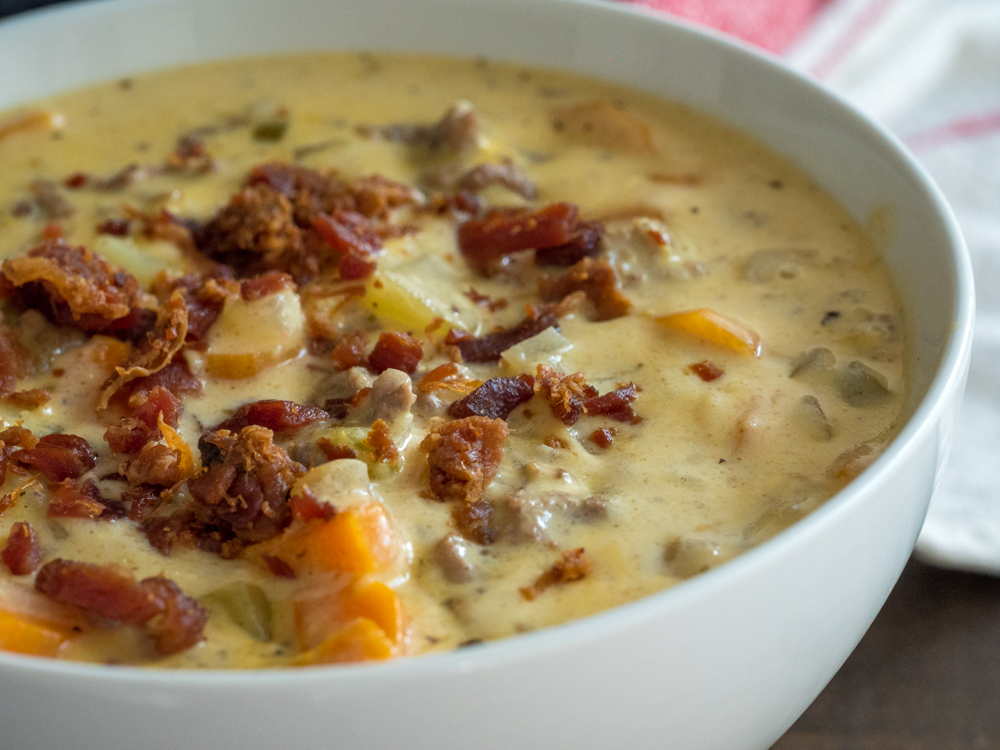

Chicken Wraps

This is one of my go to meals on the weekday when it's just me and my wife. They are so easy and so good. First, cut up and dry all excess water off of the chicken then season it. The seasoning is totally personal and the way I do it, it all depends on how I'm feeling on that day. My usual is
- Salt
- Pepper
- Garlic powder
- Onion powder
- Adobe seasoning
- A few drops of sesame oil
Sometimes I will add a little curry powder to it and it gives it a nice flavor. Once the chicken is nicely seasoned, let it sit while you get a cast iron skillet or stainless steel pan ripping hot with a good glug of some high heat oil in the bottom. Not too much to deep fry it but just enough to keep it from sticking and to give it a nice sear. once the chicken is cooked take it off heat and prepare to assemble the wraps. use a griddle to heat up your tortillas. Once they are hot and pliable, throw in some of your chicken, top it with your cheese, then your dressing, then on top add your greens whatever they may be. Fold one end other the tortilla in towards the middle and roll it up making a burrito with an open end. There you have it, chicken wraps! Enjoy! Hint: Making a marinade and grilling your chicken with a brush on glaze (BBQ for example) makes an awesome wrap
- Tortilla wraps
- Lettuce or spinach
- Boneless/skinless chicken breast or thighs
- Parmesan cheese
- Dressing of choice
Cheeseburger Soup
This is a good heart soup for those rainy days and a good soup to take to someone when they're sick. In fact, this is the first thing I ever made for my wife when we were dating and she was sick. She ended up marrying me, if that tells you anything about how good this soup is. First, sear your beef in the bottom of a crock or large stock pot (8-quart) on medium high and season while cooking with
- Salt
- Pepper
- Garlic powder
- Onion powder
- Montreal steak seasoning
- Celery salt
Once the beef is almost all browned, throw in once chopped sweet onion and cook till translucent. Once translucent, throw in 1 stick of butter, when its fully melted, sprinkle 1/4 cup flour into pot ans stir constantly until the smell of flour goes away. Slowly pour in the chicken stock while stirring, scraping the bottom with your wooden spoon to get the fond off of the bottom of the pot. once the stock is added, pour in a couple cups of water (2-4 cups). At this point you can add a splash of pickle juice. Turn heat to high and once boiling, add in a couple carrots to your liking, then turn the heat to a simmer, once simmering add in a couple stalks of celery. you can wait a little longer so the celery doesn't get mushy. From here you can cook for as long as you need in order to reduce it down to your desired consistency (Note: you'll be adding a lot of cheese later and it'll make it thicker). once you're just about good with the thickness, add in about a cup each of your cheeses, and tear up 8 Kraft singles, stirring in all this cheese to incorporate it. And there it is, cheeseburger soup, Enjoy!
- 2lb 80/20 ground beef
- Flour
- Butter
- Sweet onion
- Carrots
- Celery
- 48oz Chicken stock
- Pickle juice
- Sharp cheddar cheese
- Mozzarella Cheese
- American Kraft single cheese slices
Homemade Curry

This is one of my absolute favorite meals to make. The strong smell of this will stay in your home for at least 2 days after, thats how rich it is. It take a while but it is a very simple cook. First, start off by cutting up your chicken in 1 inch cubes then drying it off completely. season the chicken with the following.
- Salt
- Pepper
- Garlic powder
- Onion powder
- Curry powder
- Celery salt
- Cinnamon
- Nutmeg
- Chilli powder
- Paprika
Once you have seasoned your chicken, throw it into a ripping ho crock or a large deep pan. once you get some color on that chicken, dump in your can of fire roasted tomatoes. Once you pour in your tomatoes, you can add your entire coconut milk jar and stir. At this point, you are just waiting for the curry to reduce. I like to let the flavors to get to know each other on medium to medium high heat for a good 30-40 minutes. once reducing, you can start to cook your rice, this is best served with a jasmine long grain rice. at about 30% reduction, you can add heavy cream to your liking for color and a creaminess texture. It is at this point where I like to add a couple Tbsps of butter. If it is not thickening enough(I like it pretty thick, easily coating the back of your spoon) you can add some cornstarch to water to make a slurry then slowly add it to the curry to thicken it. Once you reach desired thickness, you can add more spice if you'd like and then serve with your white rice, Enjoy!
- Boneless/skinless Chicken thigh or brest
- Butter
- Sweet onion
- 1 Can Fire roasted tomatoes
- Rice
- Coconut milk
- Heavy Cream